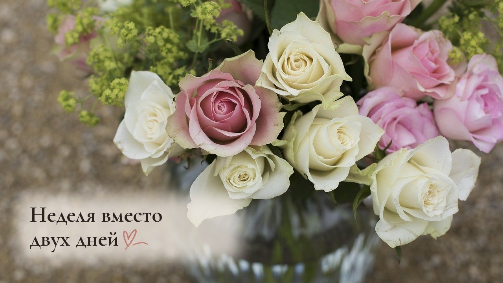
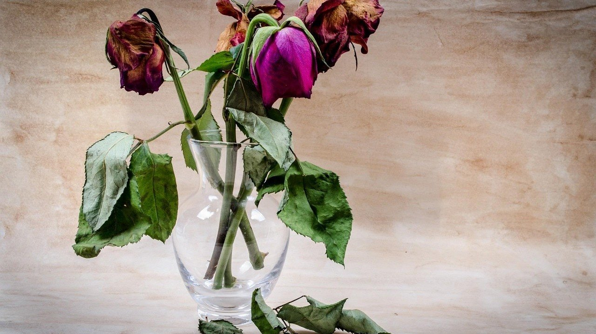

Как сохранить букет роз в вазе дольше: 5 ошибок, из-за которых он вянет за пару дней

Как сохранить букет роз в вазе дольше, если вчера он был свежим, а сегодня бутоны уже повесили головы? Чаще всего виноваты не цветы и не продавец, а первые десять минут дома.
Розы срезаны, корней у них больше нет. Всё, что им осталось, это вода, которая поднимается по стеблю. Если этот путь закрыт, букет вянет даже в полной вазе.
Ножницы, которые душат стебель
Обычные кухонные ножницы не режут, а сминают стебель. Сосуды внутри сплющиваются, и вода по ним идёт еле-еле, как сок через сломанную трубочку.
Что делать: подрезать каждый стебель острым ножом наискосок на 2–3 см, держа его под струёй воды или в миске.
Косой срез даёт больше места для воды и не даёт стеблю упереться в дно. А в воде в свежий срез не попадает воздух, который тоже закупоривает сосуды.
Листья, которые купаются
Нижние листья в вазе выглядят пышно, но через день начинают гнить. Вода мутнеет, в ней размножаются бактерии, и они забивают срез быстрее всего остального.
Что делать: оборвать все листья, которые окажутся ниже уровня воды, а шипы не трогать.
Шипы многие срывают по привычке, а это лишние ранки на стебле. Через них роза теряет влагу и быстрее сохнет. Пусть колется, зато стоит.
Вода раз в неделю
Кажется, раз вода в вазе есть, значит, всё в порядке. Но она стоит в тепле, и уже на второй день в ней живёт целая компания микробов.
Что делать: менять воду каждые 1–2 дня, промывать вазу и каждый раз подрезать стебли ещё примерно на 1 см.
Вода нужна прохладная, отстоянная. В неё можно добавить кусочек сахара и щепотку лимонной кислоты: сахар немного подкармливает цветы, а кислая среда мешает микробам. Пакетик подкормки, который иногда кладут к букету, работает так же.
Место у батареи и вазы с фруктами
Зимой у нас дома батареи жарят так, что сохнет всё, от рук до хлеба на столе. Розы над горячей батареей или на солнечном подоконнике отдают влагу быстрее, чем успевают её выпить.
Что делать: поставить букет в самое прохладное светлое место, подальше от батареи, сквозняка и тарелки с яблоками и бананами.
Спелые фрукты выделяют газ, от которого цветы стареют быстрее. Поэтому натюрморт «розы и яблоки» красив только на картинке. А на ночь вазу можно унести в прохладную комнату или на застеклённый балкон, если там нет мороза.
И ещё зимняя мелочь: букет с мороза не стоит сразу разворачивать. Пусть полчаса постоит в упаковке, чтобы привыкнуть к теплу без резкого перепада.
Поникшие розы сразу в ведро
Если бутон склонил голову, это ещё не конец. Чаще всего в стебель просто попал воздух, и вода перестала подниматься.
Что делать: подрезать стебель под водой, завернуть розу в плотную бумагу до самого бутона и поставить в глубокую прохладную воду на 2–3 часа.

Бумага держит стебель прямым, пока он снова наполняется водой. Ещё один старый способ: целиком уложить розы в ванну с прохладной водой на пару часов. Часто после этого они стоят ещё несколько дней.
Пара слов про кошку
У нас живёт бенгальская кошка, и любой новый букет для неё сначала игрушка: листья надо понюхать, стебель попробовать на зуб. Поэтому я смотрю не только на свежесть цветов, но и на то, что именно стоит в вазе.
Лилии для кошек очень опасны, даже пыльца с лепестков. Поэтому, если дома есть кошка, такой букет лучше поставить туда, куда она точно не доберётся, или вовсе подарить кому-то без питомцев.
Свежий срез, чистая вода и прохладное место дают букету неделю вместо двух дней, и для этого не нужно ничего покупать.
А что у вас дольше всего стоит в вазе: розы, хризантемы или тюльпаны?